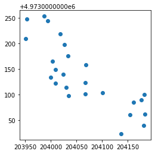

The StrataFrame object¶
The mpl.data.StrataFrame is an object expanding a pandas.DataFrame with additional features functional to plotting stratigraphic columns.
First, import all required packages and load the example dataset.
[1]:
%load_ext autoreload
%autoreload 2
import pandas as pd
from mplStrater.data import StrataFrame
[2]:
df=pd.read_csv("../../../data/example.csv")
df.head()
[2]:
| x | y | ID | from | to | fill | hatch | lbl1 | lbl2 | lbl3 | |
|---|---|---|---|---|---|---|---|---|---|---|
| 0 | 204026.93 | 4973197.522 | SI01 | 0.0 | 0.6 | Riporto conforme | _ | _ | _ | -1 |
| 1 | 204026.93 | 4973197.522 | SI01 | 0.6 | 2.0 | Assenza campione | _ | _ | _ | -1 |
| 2 | 204026.93 | 4973197.522 | SI01 | 2.0 | 3.5 | Rifiuto | Pericoloso | IA | non rilevato | -1 |
| 3 | 204026.93 | 4973197.522 | SI01 | 3.5 | 5.2 | Assenza campione | _ | _ | _ | -1 |
| 4 | 204026.93 | 4973197.522 | SI01 | 5.2 | 6.2 | Rifiuto | Pericoloso | NP | non rilevato | -1 |
Define a StrataFrame¶
Pass to mplStrater.StrataFrame a pandas.DataFrame. The dataframe must be made of consecutive layers without gaps.
Specify the epsg code of the dataframe coordinate reference system (crs).
In case you need to handle gaps, encode them with a code, such as _ and specify the encoding in a legend.
[3]:
sf=StrataFrame(df=df,epsg=32633)
The object has df attribute to access the original dataframe loaded.
[4]:
sf.df.head()
[4]:
| x | y | ID | from | to | fill | hatch | lbl1 | lbl2 | lbl3 | |
|---|---|---|---|---|---|---|---|---|---|---|
| 0 | 204026.93 | 4973197.522 | SI01 | 0.0 | 0.6 | Riporto conforme | _ | _ | _ | -1 |
| 1 | 204026.93 | 4973197.522 | SI01 | 0.6 | 2.0 | Assenza campione | _ | _ | _ | -1 |
| 2 | 204026.93 | 4973197.522 | SI01 | 2.0 | 3.5 | Rifiuto | Pericoloso | IA | non rilevato | -1 |
| 3 | 204026.93 | 4973197.522 | SI01 | 3.5 | 5.2 | Assenza campione | _ | _ | _ | -1 |
| 4 | 204026.93 | 4973197.522 | SI01 | 5.2 | 6.2 | Rifiuto | Pericoloso | NP | non rilevato | -1 |
Similarly, the mpl.Strater GeoDataFrame can be accessed with the strataframe attribute.
[5]:
sf.strataframe.head()
[5]:
| ID | x | y | fill_list | layers | hatch_list | lbl1_list | lbl2_list | lbl3_list | scale | geometry | |
|---|---|---|---|---|---|---|---|---|---|---|---|
| 0 | SI01 | 204026.930 | 4973197.522 | [Riporto conforme, Assenza campione, Rifiuto, ... | [0.0, 0.6, 2.0, 3.5, 5.2, 6.2, 8.0, 9.0, 10.0] | [_, _, Pericoloso, _, Pericoloso, _, _, _, _] | [_, _, IA, _, NP, _, _, _, _] | [_, _, non rilevato, _, non rilevato, _, _, _, _] | [-1, -1, -1, -1, -1, -1, -1, -1, -1] | 10.0 | POINT (204026.930 4973197.522) |
| 1 | SI02 | 204008.591 | 4973148.940 | [Riporto non conforme, Assenza campione, Rifiu... | [0.0, 2.0, 3.0, 6.0, 6.6, 8.5] | [Non pericoloso, _, Non pericoloso, _, Non per... | [NP, _, NP, _, NP, NP] | [non rilevato, _, non rilevato, _, non rilevat... | [-1, -1, -1, -1, -1, -1] | 8.5 | POINT (204008.591 4973148.940) |
| 2 | SI03 | 204008.734 | 4973122.605 | [Assenza campione, Riporto non conforme, Assen... | [0.0, 1.5, 3.4, 5.0, 6.0, 8.4, 8.5, 9.0] | [_, Non pericoloso, _, Non pericoloso, Non per... | [_, NP, _, NP, NP, _, _, _] | [_, non rilevato, _, non rilevato, non rilevat... | [-1, -1, -1, -1, -1, -1, -1, -1] | 9.0 | POINT (204008.734 4973122.605) |
| 3 | SI04 | 204067.328 | 4973124.151 | [Riporto non conforme, Assenza campione, Ripor... | [0.0, 1.5, 4.0, 5.5, 6.0, 7.6, 8.0] | [Non pericoloso, _, Non pericoloso, _, Pericol... | [NP, _, NP, _, P, _, _] | [non rilevato, _, non rilevato, _, non rilevat... | [-1, -1, -1, -1, -1, -1, -1] | 8.0 | POINT (204067.328 4973124.151) |
| 4 | SI05 | 204034.262 | 4973098.016 | [Riporto non conforme, Assenza campione, Ripor... | [0.0, 2.6, 4.2, 5.8, 7.6, 8.0] | [Non pericoloso, _, Non pericoloso, Non perico... | [NP, _, NP, NP, _, _] | [non rilevato, _, non rilevato, non rilevato, ... | [-1, -1, -1, -1, -1, -1] | 8.0 | POINT (204034.262 4973098.016) |
The strataframe is a geopandas.GeoDataFrame and so inherits all methods, such as plotting.
[6]:
sf.strataframe.plot()
[6]:
<AxesSubplot:>
